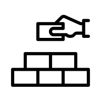
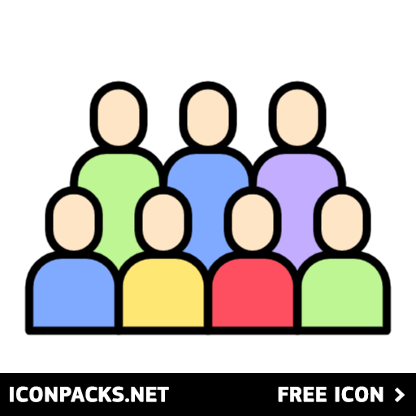

What is Agile?
Agile is a software development methodology introduced in 2001 to improve project management by focusing on collaboration, flexibility, and customer satisfaction.
Core Agile Values:
- Individuals and interactions over processes and tools
- Working software over comprehensive documentation
- Customer collaboration over contract negotiation
- Responding to change over following a plan
History of Scrum
Scrum was co-developed by Jeff Sutherland in 2002 as an Agile framework to manage complex projects efficiently. It emphasizes teamwork, accountability, and iterative progress toward a well-defined goal.

Foundation
- Self-Organization
- Size & Skills
- Allocation & Stability
- Continuous Improvement

People
- Team
- Scrum Master
- Product Owner
- Stakeholders
Culture
- Ownership & Proactivity
- Collaboration
- Trust & Respect
- Happiness
Leadership
- Backlog Management
- Transparency
- Goals
- Vision
Processes
- Ceremonies
- Content
- Quality
- Response to Change